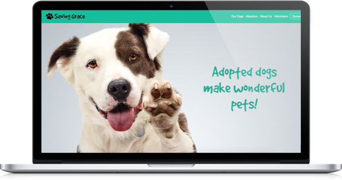
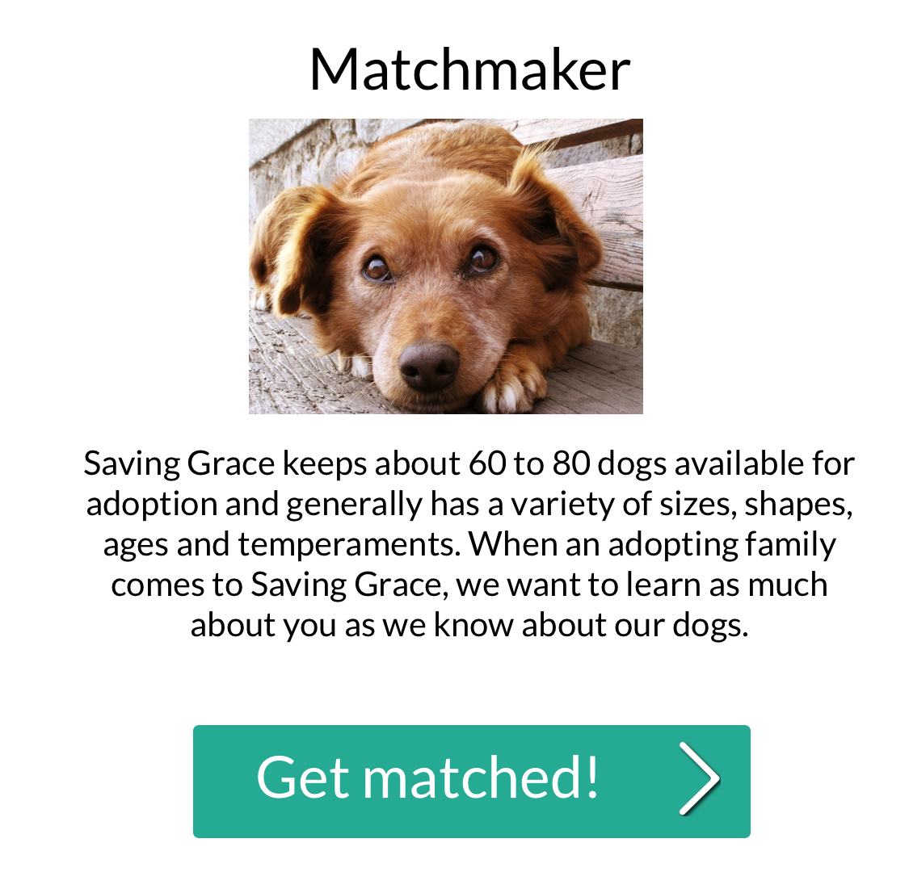
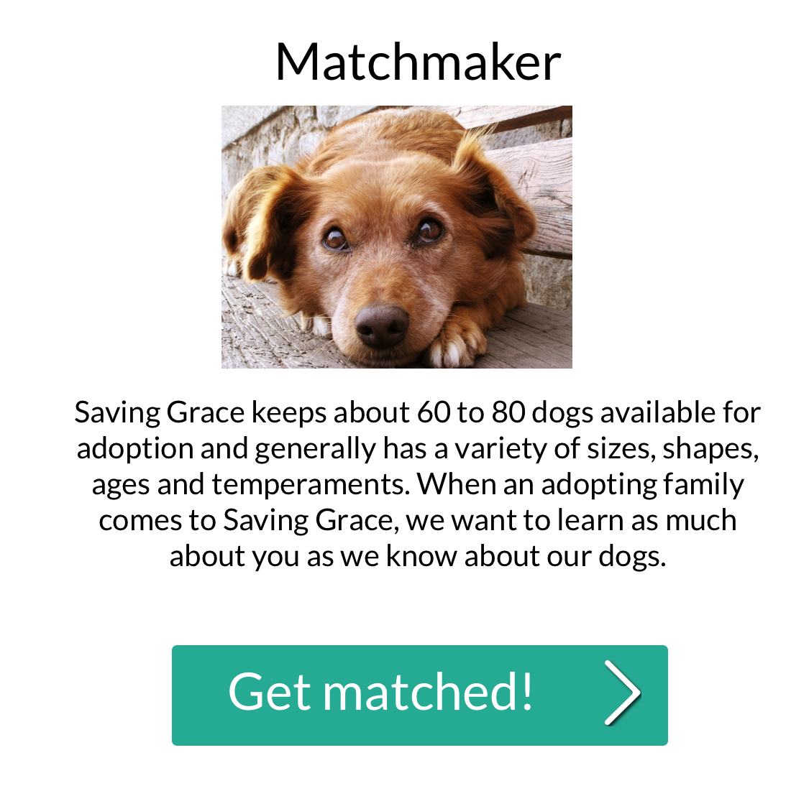

Saving Grace NC
Home-Page Redesign
About:
This is a group project completed at The Iron Yard to redesign a website for a non-profit organization. For this project, my team and I chose to redesign SavingGraceNC.org. My role in the project was to redesign the home page.Objective:
My objective for redesigning the home page was to reorganize the content to bring the most important information to the forefront of the site allowing users to navigate more easily. Another objective was to redesign the logo and change the color palette to something less "cute-sy" but still fun and welcoming.Process:
My process started by researching Saving Grace and learning more about their brand character and targe audience. From there I created sketches, wireframes using Axure, mockups using Sketch, and coded the site in html and css.Challenges:
Given that this was my first group project, there were several challenges involving collaboration. We used GitHub collaboration to merge our work simultaneously which led to merge conflicts. We had to manage all of our changes to work together. Also, we had to work on a very limited time schedule. Given only a week to design and develop, we had to leave out several javascript functions.

GitHub
Visit Site
Tools Used:
HTML, CSS, SASS, AJAX, Sketch, Adobe Illustrator, GitHubLinks:
Original SiteGitHub
Logo Design
Sketches


Mockups


 
